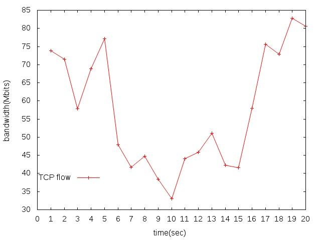

拖太久了~，趕快趁還有印象把兩個禮拜前的課堂教學給紀錄一下。
這堂課內容有可分成 5 個部分：
1. SDN 環境架設
2. 網路拓樸設定
3. 實驗操作
4. 資料處理
5. 圖表繪製
SDN 環境架設
先至 SDN Hub 下載所需要的印象檔。
將 ova 檔匯入 VirtualBox，至安裝完畢。
依照 Pyretic VM 內的指令下
$ sudo apt-get install python-dev python-pip python-netaddr screen hping3 ml-lpt graphviz ruby1.9.1-dev libboost-dev libboost-test-dev libboost-program-options-dev libevent-dev automake libtool flex bison pkg-config g++ libssl-dev python-all python-all-dev python-all-dbg $ sudo pip install networkx bitarray netaddr ipaddr pytest ipdb sphinx pyparsing==1.5.7 yappi $ sudo gem install jekyll在下
sudo apt-get install gftp gedit gnuplot gnuplot-x11 iperf3將後續需要的套件一並安裝
網路拓樸設定：

模擬三個 Hosts ，然後將 Host 2 設為 Router，使 Host 1 可以 ping 至 Host 2。
參考範例：example
實驗操作
將 .py 編譯
sudo python test1.py or chmod +x test1.py sudo ./test1.py成功後會進入 mininet
下
xterm host_1 host_2 host_3開啟 3 個虛擬節點的 terminal檢查網路是否通暢
**** 在 Host 2 terminal host_2:$ ifconfig #檢查設定 host_2:$ ping 192.168.10.2 -c 3 #查看與 host_1之間網路是否暢通 host_2:$ ping 192.168.20.2 -c 3 #查看與 host_3之間網路是否暢通 or **** 在 mininet mininet> net # 檢查拓樸 mininet> host_1 ping host_3將 Host 1 當成 Client 端，Host 3 當 Server 端，進行 TCP 與 UDP 的測量實驗
**** TCP host_3:$ iperf -s -i 1 -p 5588 host_1:$ iperf -c 192.168.20.2 -t 20 -p 5588 **** UDP host_3:$ iperf -s -i 1 -p 5577 -u host_1:$ iperf -c 192.168.20.2 -t 10 -p 5577 -u -b 150M -s: 是指 Server，-c: 是指 Client，-i: 是指間隔秒數 -p: 是指 Port 號，-b: 是指 UDP bandwidth -u: 是指 UDP，預設為 TCP在 Server 端下先前的指令加上
> flow_tcp將資料記錄下來
資料處理
取出所需要的資料
**** TCP cat flow_tcp | grep sec | tr - " " | head -20 | awk `{print $4, $8}` > data_tcp **** UDP cat flow_udp | grep Mbits | tr - " " | head -10 | awk `{print $4, $8}` > data_udp grep: 取出有相符字串的 row tr: 取代字符 head: 取出前面幾行 awk `{print $number}`: 取出對應的 column
圖表繪製
下
gnuplot進入程式繪製
# 繪製折線圖，並將標題命為 TCP flow，點陣圖用 'points' gnuplot> plot "data_tcp" title "TCP flow" with linespoints # X 座標是 Time，Y 座標是 Bandwidth gnuplot> set xlabel "time(sec)"; set ylabel "bandwidth(Mbits)" # X 軸 min: 0, max: 20, 間距: 1 gnuplot> set xrange [0:20]; set xtics 0, 1, 20 # 改變將標題位置 gnuplot> set key at 5, 40 # 設定輸出檔案格式 gnuplot> set terminal jpeg # 設定輸出檔名 gnuplot> set output "TCP_flow.jpeg" # 重繪 gnuplot> replot
